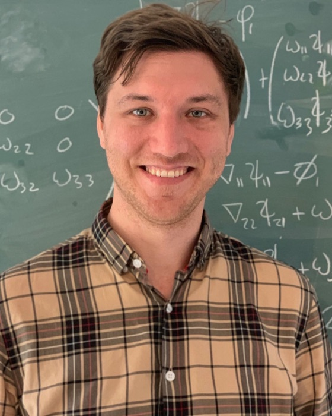

I am a theoretical physicist working on the mathematical structure of Feynman integrals, scattering amplitudes and cosmological correlators. Much of my work uses twisted (co)homology and intersection theory to find differential equations, bases and hidden structure for these integrals.
In fall 2027 I will move to the Institute for Advanced Study in Princeton. Before Amsterdam I was a postdoc at Brown University. I received my PhD from McGill University in 2022, supervised by Simon Caron-Huot.
You can explore the graphical coaction for FRW cosmological correlators interactively at frwcoaction.ca.
Recent papers
- Direct-to-Symbol Integration from Landau Analysis arXiv:2609.15952 INSPIRE
- A Graphical Coaction for FRW Integrals from Partial/Relative Twisted (Co)homology arXiv:2606.13627 interactive companion INSPIRE
- Magic Relations and Critical Varieties of Feynman Integrals arXiv:2605.29789 INSPIRE
- A Graphical Coaction for FRW Wavefunction Coefficients arXiv:2603.25703 interactive companion INSPIRE
- Toward the analytic bootstrap of energy correlators JHEP 06 (2026) 140 arXiv:2509.22782 INSPIRE